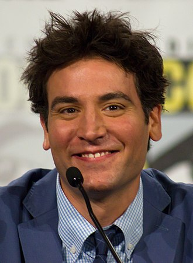
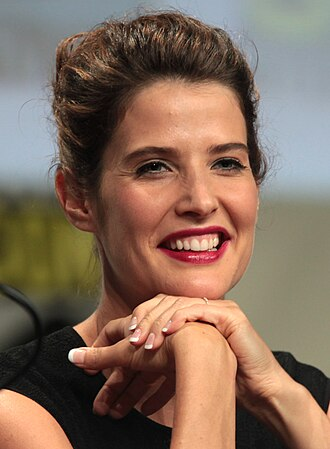
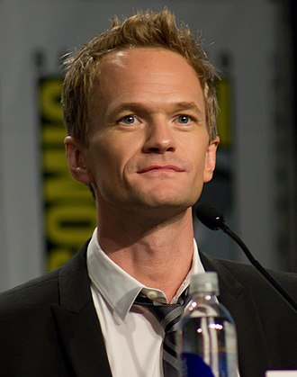
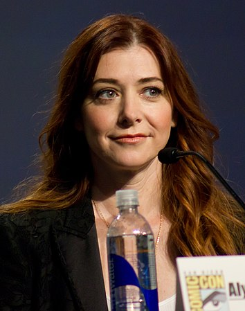
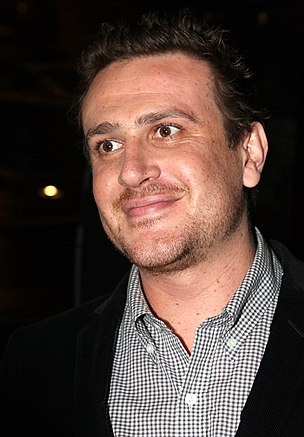
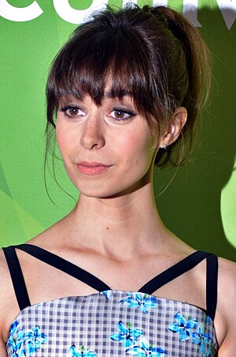

Josh Radnor como Ted Mosby, um arquiteto e o personagem central da série. Ted se mudou para Nova York com seus amigos Marshall e Lily depois de se formar pela Universidade de Wesleyan. Em Nova York, ele conheceu Barney (no banheiro do MacLaren's Pub) e Robin, que passou a fazer parte do grupo. Ted está em busca de felicidade e da "The One" (A Primeira), a mulher que vai se casar. Ted é o mais maduro do grupo, preferindo ser mais elegante e tendo interesses mais maduros do que seus amigos. Ele vai para festas e encontros com a ideia de encontrar a mulher de sua vida, mas todos seus relacionamentos tem problemas depois de algum tempo. Apesar dessas qualidades, Ted age imaturamente por muitas vezes, tais como a participação em atividades loucas com Barney. Ele é um grande fã de Star Wars e cita esses filmes muitas vezes, além de frequentemente mencionar seu poeta favorito, o chileno Pablo Neruda. Ted é de Cleveland, Ohio, mas considera-se um verdadeiro nova-iorquino, mostrando um enorme ódio pelo estado vizinho e "rival", Nova Jersey. Até que ele finalmente encontra o amor da sua vida, que é visto pela primeira vez no season finale da temporada 8.

Imagem do Ted Mosby, representado por Josh Radnor
Cobie Smulders como Robin Scherbatsky, uma âncora de um jornal nacional e a primeira namorada com quem Ted teve uma relação séria. Robin migrou do Canadá para ter um emprego em um programa de notícias e conheceu Ted no MacLaren's Pub. Embora seu relacionamento com Ted não tenha dado certo, eles continuaram amigos íntimos por grande parte do tempo. Sua descendência canadense é uma fonte de muitas piadas por parte de seus amigos, especialmente Barney. Robin é uma moça independente e de personalidade forte ao qual deixou sempre claro que nunca quis ter um compromisso, isso arriscaria seu trabalho como jornalista e lhe poupasse de entrar em algo mais sério, mais tarde fazendo com que Barney se apaixone por ela por serem tão semelhantes. Logo após entram em um relacionamento que os leva a se casar. Na 2ª Temporada, é revelado que quando era adolescente, ela era uma estrela pop sob o nome artístico, ‘Robin Sparkles’, e tinha uma canção chamada Let's Go to The Mall. Mais tarde, ela virou punk com o nome de ‘Robin Daggers’. Seu nome completo, Robin Charles Sherbatsky Jr. é revelado na 4ª Temporada, no episódio "Happily Ever After", um nome masculino explicado pelo fato de que seu pai, também Robin, estava desapontado por não ter um filho.

Imagem de Robin Scherbatsky, representado por Cobie Smulders
Neil Patrick Harris como Barney Stinson, um "bro" de Ted que trabalha em uma função chamada "PLEASE", no GNB. Devido ao abandono que sofreu de seu pai na infância, Barney tem problemas com isso e se apega muito a seus amigos. Ele é um playboy que usa sua riqueza para seduzir as mulheres para sexo com nenhuma intenção de se envolver em um relacionamento. Barney é um dos dois do grupo que são realmente de Nova York (Lily é a outra). Ele se apaixona por Robin e os dois estão noivos e, apesar de que a história foi revelada apenas até cerca de 56 horas antes do casamento, sabemos que o casamento vai acontecer, pois no final do episódio 13 da 8ª Temporada, vemos Robin dançando com seu pai na recepção do casamento.

Imagem de Barney Stinson, representado por Neil Patrick Harris
Alyson Hannigan como Lily Aldrin, uma professora de séries infantis e esposa de Marshall. Lily é a "líder" do grupo, sempre está lá para resolver conflitos ou para oferecer um ombro para seus amigos chorarem. Barney trata Lily como uma confidente, porém ela é péssima em manter segredos. Lily por muitas vezes é manipuladora, persuadindo seus amigos para obter seus resultados desejados. Ela conheceu Marshall na faculdade e eles estão juntos desde então, se separando apenas uma vez. Embora pareça tão doce e bonita, Lily é bastante brava e com instintos sexuais aflorados, além de ter desejos semelhantes aos de Barney. Durante a 7ª Temporada, ela fica grávida de Marshall e tem seu primeiro filho, Marvin Waitforit Eriksen. Assim como Barney, ela é de Nova York.

imagem de Lily Aldrin, representada por Alyson Hannigan
Jason Segel como Marshall Eriksen, o melhor amigo de Ted (afirmação muitas vezes contestada por Barney). Marshall é casado com Lily, pela qual se apaixonou desde o seu primeiro ano de faculdade. Marshall e Lily servem como inspiração para Ted para encontrar o seu verdadeiro amor. Marshall, como Ted, nasceu fora de Nova York (St. Cloud, Minnesota), mas considera a cidade sua casa. Seu sonho de ser um advogado ambiental foi interrompido pois ele não tinha dinheiro suficiente para pagar seu casamento com Lily, então ele trabalhou com Barney no GNB e lamentou a cada momento por isso.

Imagem de Marshall Eriksen, representado por Jason Segel
Cristin Milioti como A Mãe (The Mother)/A Garota do Guarda-Chuva Amarelo/Tracy McConnell (a partir da 9º Temporada), a futura mulher de Ted Mosby. A história de como Ted conheceu A Mãe é o dispositivo de enquadramento por trás da série; muitos fatos sobre ela são revelados ao longo da série, incluindo o fato de que Ted, uma vez inadvertidamente furtou seu guarda-chuva amarelo antes de acidentalmente deixá-lo para trás em seu apartamento.

Imagem de Tracy McConnell, representado por Cristin Milioti